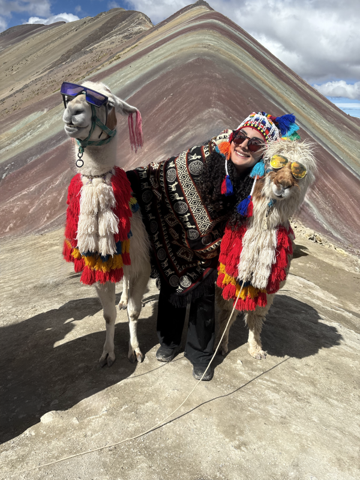

Essa sou eu, Michele, e é um prazer te ter aqui!
Nasci e cresci em São Paulo. Em 2019, aos 18 anos, me mudei para João Pessoa, na Paraíba, para cursar Comunicação em Mídias Digitais na UFPB. Ao longo da graduação, tive contato com diferentes áreas da comunicação, do design e da tecnologia. Foi em 2020, porém, que conheci a área de produtos digitais e percebi que era ali que eu queria construir minha trajetória.
Minha experiência profissional em produto começou em uma startup de tecnologia e educação. A partir daí, passei a me envolver cada vez mais com o desenvolvimento de soluções digitais. Em 2021, comecei a atuar como Product Designer em projetos para o Governo do Estado da Paraíba, acompanhando não apenas a criação das interfaces, mas também outras etapas do ciclo de vida dos produtos.
Essa experiência ampliou muito a forma como passei a enxergar o design. Para mim, ele vai muito além de criar interfaces bonitas. É sobre entender pessoas, contextos e problemas para encontrar soluções que façam sentido e tornem a experiência mais simples e intuitiva.
Hoje, busco equilibrar experiência, estética e objetivos do produto em cada projeto. Gosto de entender como as pessoas realmente utilizam uma solução, identificar onde estão os atritos e pensar em maneiras de tornar cada etapa mais clara, fluida e útil.
Nasci em São Paulo e, aos 18 anos, me mudei para João Pessoa para cursar Comunicação em Mídias Digitais na UFPB. Em 2020, conheci a área de produtos digitais e, desde então, venho construindo minha trajetória entre design, tecnologia e experiência do usuário.
Atualmente, atuo como Product Designer de forma ampla, participando de diferentes etapas do ciclo de vida do produto, desde a compreensão do problema e definição de requisitos até pesquisa, estruturação de fluxos, prototipação, validação e acompanhamento da solução. Meu objetivo é criar produtos claros, intuitivos e alinhados tanto às necessidades das pessoas quanto aos objetivos do negócio.

Experiência
UI-UX Designer
- Criei do zero o Design System do Citrus, plataforma omnichannel com mais de 300 mil usuários, definindo escopo, fundações, componentes e padrões em 30 dias. Hoje, esse sistema sustenta o redesign incremental de toda a plataforma.
- Também sou responsável pelo design do novo canal de teleatendimento em Libras, desenvolvido para o Banco do Nordeste.
- Além disso, lidero o design de dois novos produtos da Smartspace: o Portal do Parceiro, estruturado desde a concepção até o Design System, e o módulo Insights, uma solução com IA voltada à geração de dashboards e informações estratégicas para apoiar a tomada de decisão dos gestores.
Product Designer --> Avança MEI
Product Designer --> Seplag
Product Designer --> Sistema de Matrículas & PB-Edu
Product Manager
Educação
Tecnólogo em Análise e Desenvolvimento de Sistemas
Bacharelado em Comunicação em Mídias Digitais
- Tese de Bacharelado: Desenvolvimento de um Protótipo Gamificado para Revisão de Conteúdos: Um Produto para Diversificar o Estudo de Concurseiros.
- Intercâmbio Acadêmico: Mobilidade Acadêmica Internacional no departamento de Multimédia da Universidade de Trás-os-Montes e Alto-Douro (UTAD) Portugal (2023).
Extracurriculares
- NASA Space Apps Challenge – João Pessoa (Out/2025) — Líder da equipe Teletubbies. Resultado: 2º lugar local e indicação Global Nominee.
- Atuei em squad multidisciplinar (UX, PO, DEV) por 45 dias, com dailys e cerimônias Scrum, conduzindo discovery, prototipação e handoff para um projeto criado do zero.